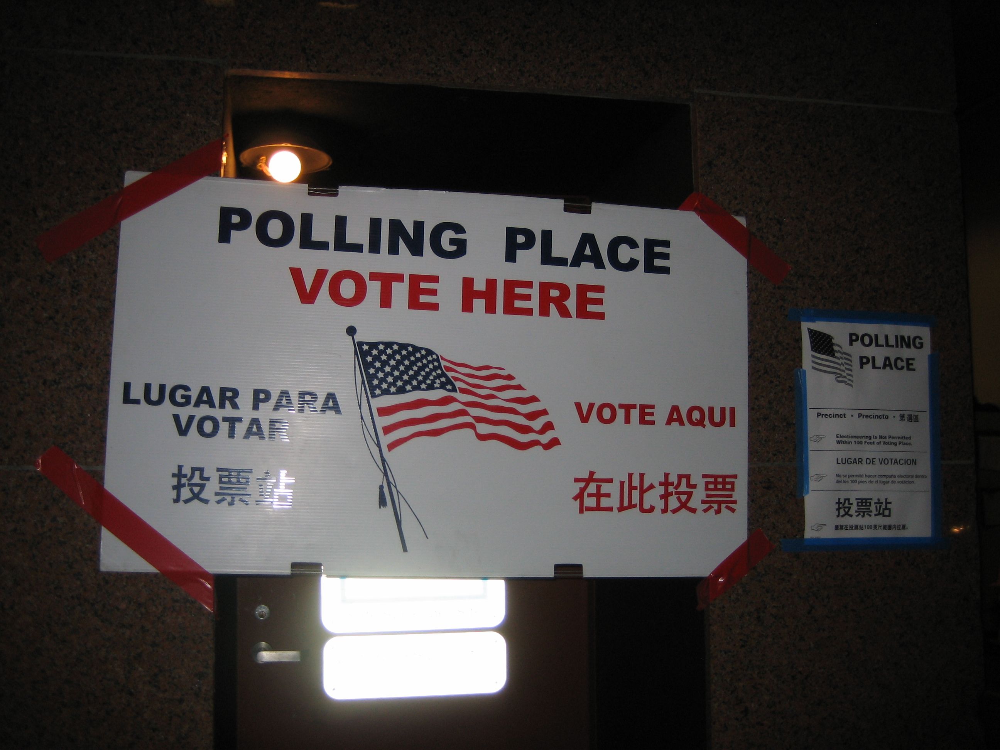

In an absolute stunner small businessman Mitchell Green has won a seat in Congress. Most experts gave him little to no chance often comparing him to novelty canidates like "The Rent Is To Damn High Guy" and Grandpa Monster. His opponents mockingly said his "Claim to fame was getting beaten up by the cops." "Do you really want butcher representing you in congress? I don't think he can cut that beef" What makes this victory so stunning to many is his Harlem district has been so dramatically rezoned that it no longer has an African American majority. The cross over appeal of the butcher from Harlem was surely underestimated.

IMG_1936 by Flickr. Licensed CC BY-NC-SA 2.0